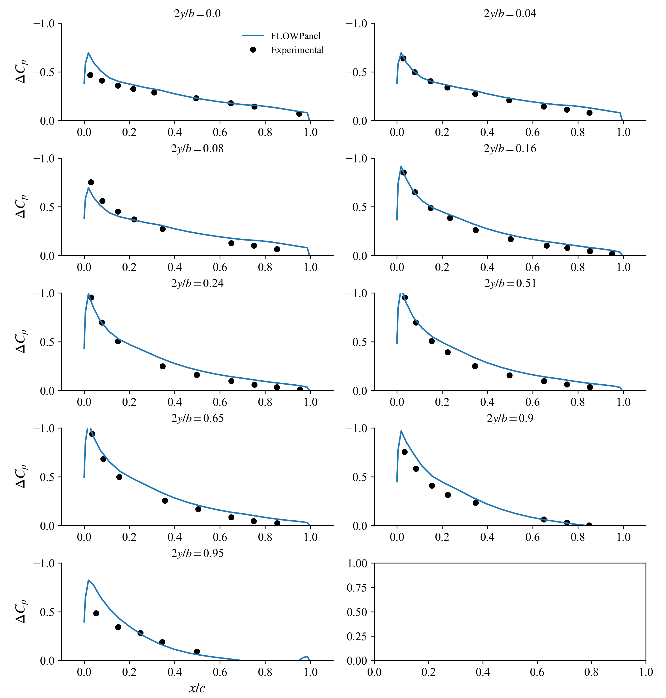
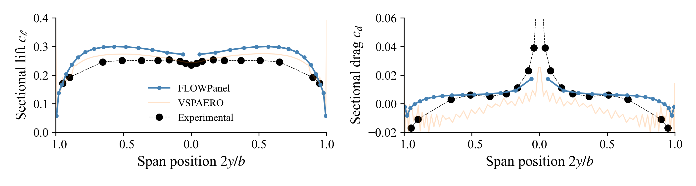

In this example we solve the flow around a $45^\circ$ swept-back wing at an angle of attack of $4.2^\circ$ using a rigid wake model.
$4.2^\circ$ Angle of Attack
#=##############################################################################
# DESCRIPTION
45deg swept-back wing at an angle of attack of 4.2deg. This wing has an
aspect ratio of 5.0, a RAE 101 airfoil section with 12% thickness, and no
dihedral, twist, nor taper. This test case matches the experimental setup
of Weber, J., and Brebner, G., “Low-Speed Tests on 45-deg Swept-Back Wings,
Part I,” Tech. rep., 1951.
# AUTHORSHIP
* Author : Eduardo J. Alvarez
* Email : Edo.AlvarezR@gmail.com
* Created : Dec 2022
* License : MIT License
=###############################################################################
import FLOWPanel as pnl
run_name = "sweptwing000" # Name of this run
save_path = run_name # Where to save outputs
airfoil_path = joinpath(pnl.examples_path, "data") # Where to find airfoil contours
paraview = true # Whether to visualize with Paraview
# ----------------- SIMULATION PARAMETERS --------------------------------------
AOA = 4.2 # (deg) angle of attack
magVinf = 30.0 # (m/s) freestream velocity
Vinf = magVinf*[cos(AOA*pi/180), 0, sin(AOA*pi/180)] # Freestream
rho = 1.225 # (kg/m^3) air density
# ----------------- GEOMETRY DESCRIPTION ---------------------------------------
b = 98*0.0254 # (m) span length
ar = 5.0 # Aspect ratio b/c_tip
tr = 1.0 # Taper ratio c_tip/c_root
twist_root = 0 # (deg) twist at root
twist_tip = 0 # (deg) twist at tip
lambda = 45 # (deg) sweep
gamma = 0 # (deg) dihedral
airfoil = "airfoil-rae101.csv" # Airfoil contour file
# ----- Chordwise discretization
# NOTE: NDIVS is the number of divisions (panels) in each dimension. This an be
# either an integer, or an array of tuples as shown below
n_rfl = 8 # Control number of chordwise panels
# n_rfl = 10 # <-- uncomment this for finer discretization
# 0 to 0.25 of the airfoil has `n_rfl` panels at a geometric expansion of 10 that is not central
NDIVS_rfl = [ (0.25, n_rfl, 10.0, false),
# 0.25 to 0.75 of the airfoil has `n_rfl` panels evenly spaced
(0.50, n_rfl, 1.0, true),
# 0.75 to 1.00 of the airfoil has `n_rfl` panels at a geometric expansion of 0.1 that is not central
(0.25, n_rfl, 1/10.0, false)]
# NOTE: A geometric expansion of 10 that is not central means that the last
# panel is 10 times larger than the first panel. If central, the
# middle panel is 10 times larger than the peripheral panels.
# ----- Spanwise discretization
n_span = 15 # Number of spanwise panels on each side of the wing
# n_span = 60 # <-- uncomment this for finer discretization
NDIVS_span_l = [(1.0, n_span, 10.0, false)] # Discretization of left side
NDIVS_span_r = [(1.0, n_span, 10.0, false)] # Discretization of right side
# ----------------- GENERATE BODY ----------------------------------------------
println("Generating body...")
#= NOTE: Here we loft each side of the wing independently. One could also loft
the entire wing at once from left tip to right tip, but the sweep of the
wing would lead to an asymmetric discretization with the panels of left
side side would have a higher aspect ratio than those of the right side.
To avoid that, instead we loft the left side from left to right, then we
loft to right side from right to left, and we combine left and right
sides into a MultiBody that represents the wing.
=#
bodytype = pnl.RigidWakeBody{pnl.VortexRing} # Elements and wake model
# Arguments for lofting the left side of the wing
bodyoptargs_l = (
CPoffset=1e-14, # Offset control points slightly in the positive normal direction
characteristiclength=(args...)->b/ar, # Characheristic length for control point offset
kerneloffset=1e-8, # Offset of kernel to avoid singularities
kernelcutoff=1e-14 # Cutoff of kernel to avoid singularities
)
# Same arguments but negative CPoffset since the normals are flipped
bodyoptargs_r = (
CPoffset=-bodyoptargs_l.CPoffset,
characteristiclength=bodyoptargs_l.characteristiclength,
kerneloffset=bodyoptargs_l.kerneloffset,
kernelcutoff=bodyoptargs_l.kernelcutoff
)
# Loft left side of the wing from left to right
@time wing_left = pnl.simplewing(b, ar, tr, twist_root, twist_tip, lambda, gamma;
bodytype=bodytype, bodyoptargs=bodyoptargs_l,
airfoil_root=airfoil, airfoil_tip=airfoil,
airfoil_path=airfoil_path,
rfl_NDIVS=NDIVS_rfl,
delim=",",
span_NDIVS=NDIVS_span_l,
b_low=-1.0, b_up=0.0
)
# Loft right side of the wing from right to left
@time wing_right = pnl.simplewing(b, ar, tr, twist_root, twist_tip, lambda, gamma;
bodytype=bodytype, bodyoptargs=bodyoptargs_r,
airfoil_root=airfoil, airfoil_tip=airfoil,
airfoil_path=airfoil_path,
rfl_NDIVS=NDIVS_rfl,
delim=",",
span_NDIVS=NDIVS_span_r,
b_low=1.0, b_up=0.0,
)
# Put both sides together to make a wing with symmetric discretization
bodies = [wing_left, wing_right]
names = ["L", "R"]
@time body = pnl.MultiBody(bodies, names)
println("Number of panels:\t$(body.ncells)")
# ----------------- CALL SOLVER ------------------------------------------------
println("Solving body...")
# Freestream at every control point
Uinfs = repeat(Vinf, 1, body.ncells)
# Unitary direction of semi-infinite vortex at points `a` and `b` of each
# trailing edge panel
Das = repeat(Vinf/magVinf, 1, body.nsheddings)
Dbs = repeat(Vinf/magVinf, 1, body.nsheddings)
# Solve body (panel strengths) giving `Uinfs` as boundary conditions and
# `Das` and `Dbs` as trailing edge rigid wake direction
@time pnl.solve(body, Uinfs, Das, Dbs)
# ----------------- POST PROCESSING --------------------------------------------
println("Post processing...")
# Calculate surface velocity induced by the body on itself
@time Us = pnl.calcfield_U(body, body; characteristiclength=(args...)->b/ar)
# NOTE: Since the boundary integral equation of the potential flow has a
# discontinuity at the boundary, we need to add the gradient of the
# doublet strength to get an accurate surface velocity
# Calculate surface velocity U_∇μ due to the gradient of the doublet strength
UDeltaGamma = pnl.calcfield_Ugradmu(body)
# Add both velocities together
pnl.addfields(body, "Ugradmu", "U")
# Calculate pressure coefficient
@time Cps = pnl.calcfield_Cp(body, magVinf)
# Calculate the force of each panel
@time Fs = pnl.calcfield_F(body, magVinf, rho)
# ----------------- VISUALIZATION ----------------------------------------------
if paraview
str = save_path*"/"
# Save body as a VTK
str *= pnl.save(body, "wing"; path=save_path, wake_panel=false, debug=false)
# Call Paraview
run(`paraview --data=$(str)`)
end
(see the complete example under examples/sweptwing.jl to see how to postprocess the solution to calculate the slices of pressure distribution and spanwise loading that is plotted here below)
Chordwise pressure distribution

Pressure difference 
Spanwise loading distribution 
| Experimental | FLOWPanel | Error | |
|---|---|---|---|
| $C_L$ | 0.238 | 0.28193 | 18.459% |
| $C_D$ | 0.005 | 0.01294 | 158.841% |